Chapter 6
tips
qqplot
比較qnorm,quantile
qnorm(seq(0.01,0.99,0.01))
quantile(rnorm(200),probs = seq(0.01,0.99,0.01)) #基本上就是升冪排序結論:
x<-qnorm(seq(0.01,0.99,0.01))
y<-quantile(rnorm(200,10,2),probs = seq(0.01,0.99,0.01)) #基本上就是升冪排序
par(mfrow=c(3,1))
qqnorm(x)
qqnorm(y)
plot(x,y)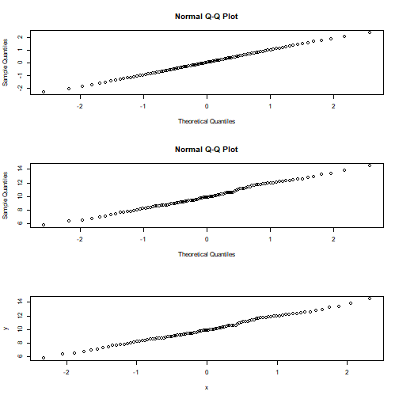
example
my_data <- ToothGrowth
qqnorm(my_data$len, pch = 1, frame = FALSE)
qqline(my_data$len, col = "steelblue", lwd = 2)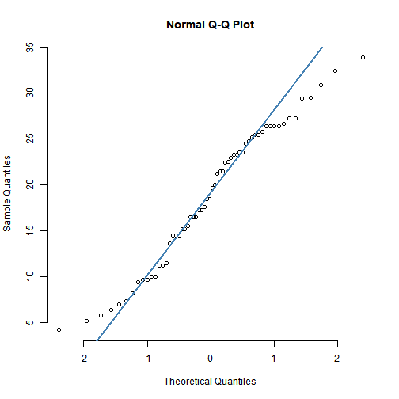
# 📝 也可以利用套裝car上的函數
library(car)
#> Loading required package: carData
qqPlot(my_data$len)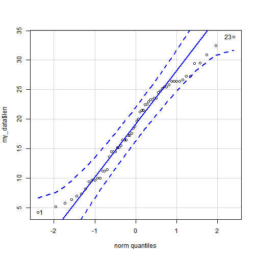
#> [1] 23 124個人的數學和統計成績
MS=read.csv("data/mathstat.csv",header=T)
MS # 📝 data.frame
#> maths stats
#> 1 81 72
#> 2 90 90
#> 3 91 96
#> 4 73 78
#> 5 88 89
#> 6 78 82
#> 7 95 96
#> 8 63 75
#> 9 85 86
#> 10 60 71
#> 11 83 78
#> 12 81 94
#> 13 77 73
#> 14 60 66
#> 15 66 58
#> 16 84 87
#> 17 80 86
#> 18 85 84
#> 19 70 82
#> 20 54 56
#> 21 93 98
#> 22 68 76
head(MS)
#> maths stats
#> 1 81 72
#> 2 90 90
#> 3 91 96
#> 4 73 78
#> 5 88 89
#> 6 78 82
dim(MS)
#> [1] 22 2
stem(MS$maths)
#>
#> The decimal point is 1 digit(s) to the right of the |
#>
#> 5 | 4
#> 6 | 00368
#> 7 | 0378
#> 8 | 01134558
#> 9 | 0135
stem(MS$stats)
#>
#> The decimal point is 1 digit(s) to the right of the |
#>
#> 5 | 68
#> 6 | 6
#> 7 | 1235688
#> 8 | 2246679
#> 9 | 04668par(mfrow=c(1,2))
hist(MS$maths); hist(MS$stats) 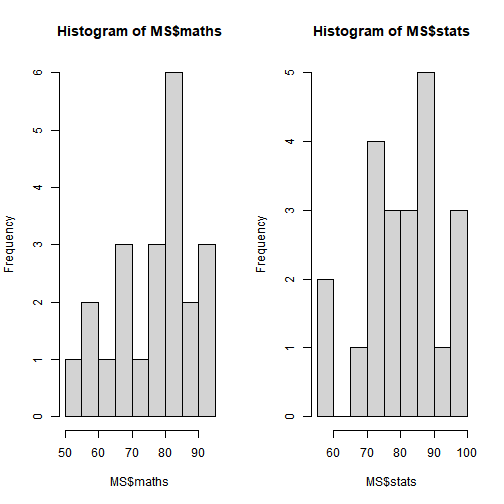
par(mfrow=c(1,1))
stem(MS$maths)
#>
#> The decimal point is 1 digit(s) to the right of the |
#>
#> 5 | 4
#> 6 | 00368
#> 7 | 0378
#> 8 | 01134558
#> 9 | 0135
stem(MS$stats)
#>
#> The decimal point is 1 digit(s) to the right of the |
#>
#> 5 | 68
#> 6 | 6
#> 7 | 1235688
#> 8 | 2246679
#> 9 | 04668
EDA <- function (x)
{
par(mfrow=c(2,2))
hist(x)
dotchart(x)
boxplot(x,horizontal=T)
qqnorm(x);qqline(x)
par(mfrow=c(1,1))
}
EDA(MS$maths)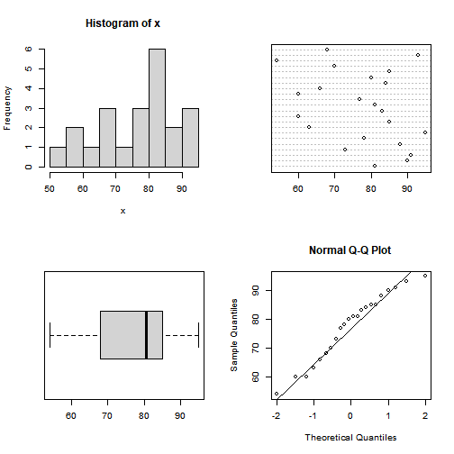
EDA(MS$stats)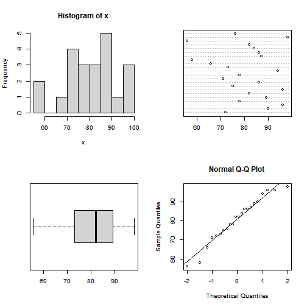
A numeric vector with 199 entries each measuring compensation in 10,000s of dollars.
library(UsingR) # ebook UsingR
#> Loading required package: MASS
#> Loading required package: HistData
#> Loading required package: Hmisc
#> Loading required package: lattice
#> Loading required package: survival
#> Loading required package: Formula
#> Loading required package: ggplot2
#>
#> Attaching package: 'Hmisc'
#> The following objects are masked from 'package:base':
#>
#> format.pval, units
#>
#> Attaching package: 'UsingR'
#> The following object is masked from 'package:survival':
#>
#> cancer
data(exec.pay) #
mean(exec.pay)
#> [1] 59.88945
summary(exec.pay)
#> Min. 1st Qu. Median Mean 3rd Qu. Max.
#> 0.00 14.00 27.00 59.89 41.50 2510.00
boxplot(exec.pay)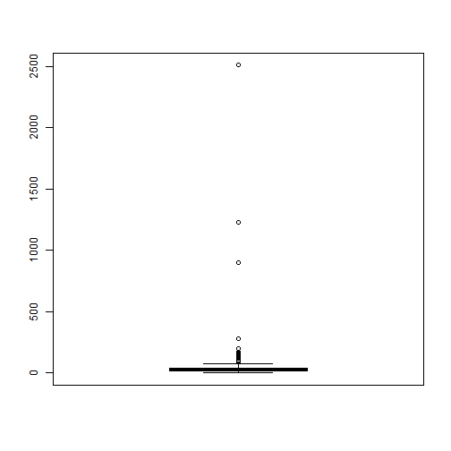
mean(exec.pay,trim=0.1)
#> [1] 29.96894
EDA(exec.pay)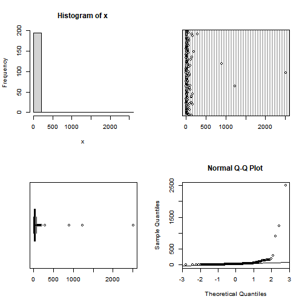
做一下轉換
#log.exec.pay = log(exec.pay[exec.pay >0])/log(10) #
#EDA(log.exec.pay)
#pay=round(rexp(100,1⁄25),0)
#pay1=pay[pay>10]
總經理薪水,10萬為單位
pay=c(11,19,14,22,14,28,13,81,12,43,11,16,31,16,23,42,22,26,17,22,
13,27,108,16,43,82,14,11,51,76,28,66,29,14,14,65,37,16,37,35,
39,27,14,17,13,38,28,40,85,32,25,26,16,12,54,40,18,27,16,14,
33,29,77,50,19,34)
EDA(pay)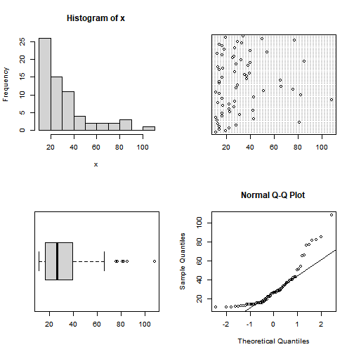
log.pay =log10(pay)
EDA(log.pay)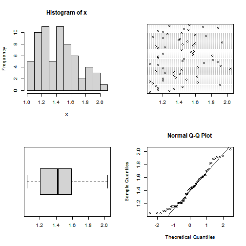
ewr
The ewr data frame has 46 rows and 11 columns.
Gives taxi in and taxi out times for 8 different airlines and several months at EWR airport.
Airline codes are AA (American Airlines), AQ (Aloha Airlines), AS (Alaska Airlines), CO (Continental Airlines), DL (Delta Airlines), HP (America West Airlines), NW (Northwest Airlines), TW (Trans World Airlines), UA (United Airlines), US (US Airways), and WN (Southwest Airlines)
data()
data(ewr)
head(ewr)
#> Year Month AA CO DL HP NW TW UA US inorout
#> 1 2000 Nov 8.6 8.3 8.6 10.4 8.1 9.1 8.4 7.6 in
#> 2 2000 Oct 8.5 8.0 8.4 11.2 8.2 8.5 8.5 7.8 in
#> 3 2000 Sep 8.1 8.5 8.4 10.2 8.3 8.6 8.2 7.6 in
#> 4 2000 Aug 8.9 9.1 9.2 14.5 9.0 10.3 9.2 8.7 in
#> 5 2000 Jul 8.3 8.9 8.2 11.5 8.8 9.1 9.2 8.2 in
#> 6 2000 Jun 8.8 9.0 8.8 14.9 8.4 10.8 8.9 8.3 in
boxplot(ewr[,3:10])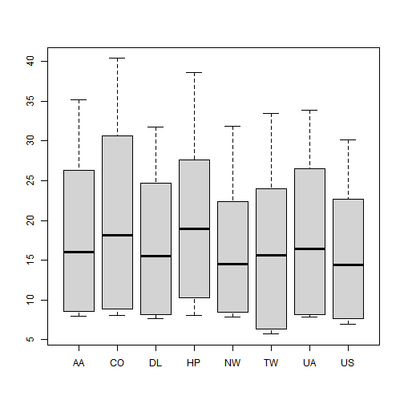
names(ewr)[1]
#> [1] "Year"
par(mfrow=c(2,4))
for(i in 3:10) boxplot(ewr[,i] ~ as.factor(ewr$inorout),main=names(ewr)[i])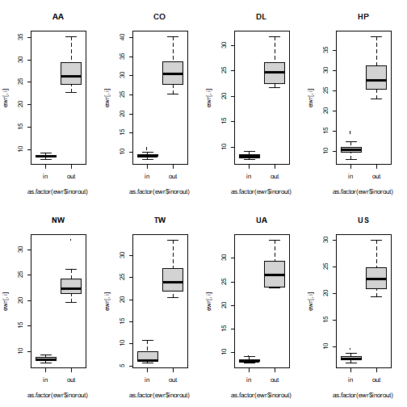
par(mfrow=c(1,1))
attach(InsectSprays)
boxplot(count)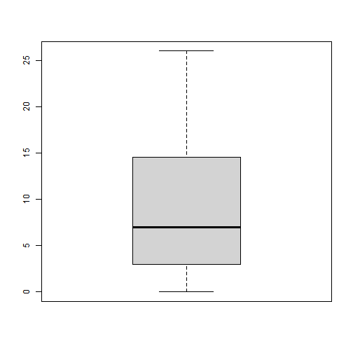
boxplot(count~spray)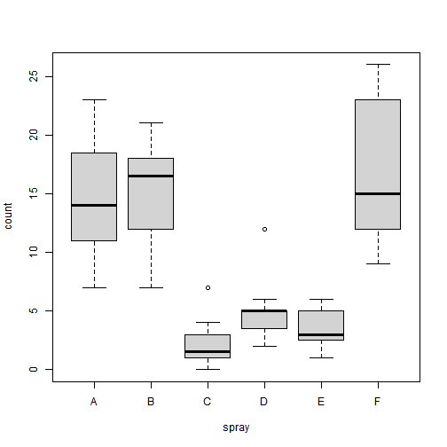
detach()qqplot 比較
X=runif(100);EDA(X)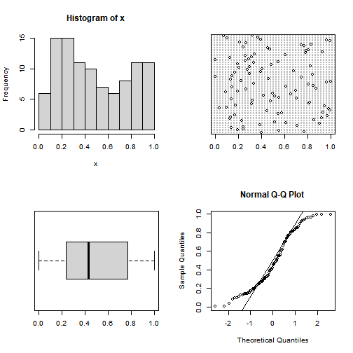
X=rnorm(100);EDA(X)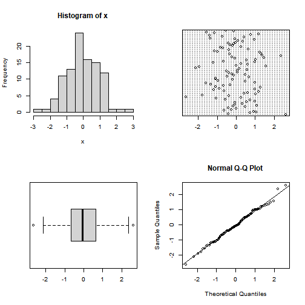
X=rt(100,10);EDA(X)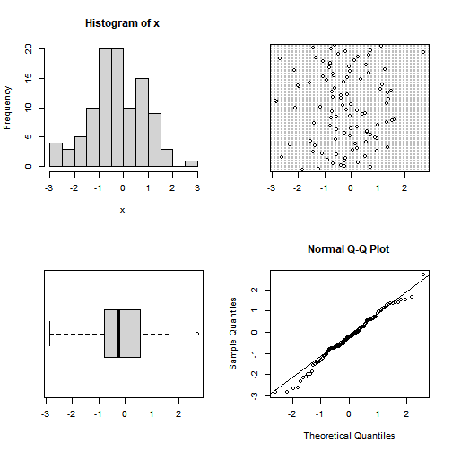
X=rf(100,10,10);EDA(X)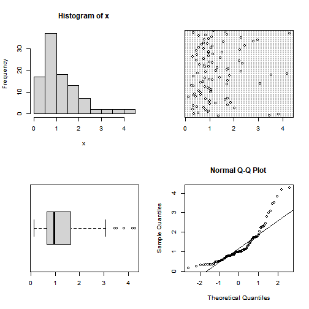
X=abs(rnorm(200));EDA(X)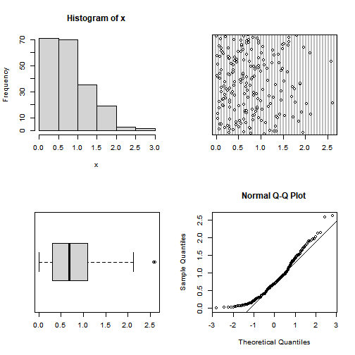
X=rexp(200);EDA(X)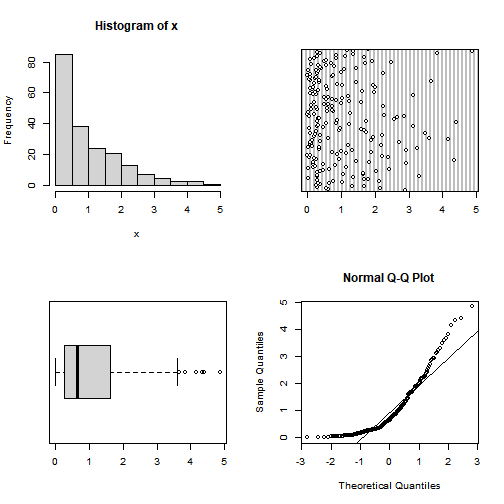
yes,no
x=c("y","n","n","y","y","n","n","y","y")
table(x)
#> x
#> n y
#> 4 5紀錄每個人喜歡的酒類: 紅、白、黃、啤酒
drink=c(3,4,1,1,3,4,3,3,1,3,2,1,2,1,2,3,2,3,1,1,1,1,4,3,1)
table(drink)
#> drink
#> 1 2 3 4
#> 10 4 8 3
par(mfrow=c(1,2))
barplot(drink)
barplot(table(drink))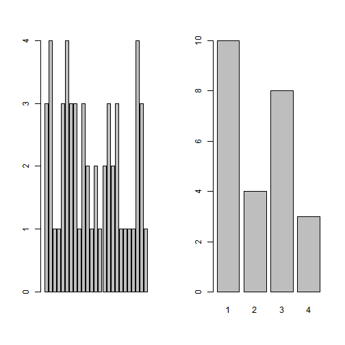
par(mfrow=c(1,2))
barplot(table(drink)/length(drink),col=1:4)
barplot(table(drink),col=c("red","yellow","blue","white"))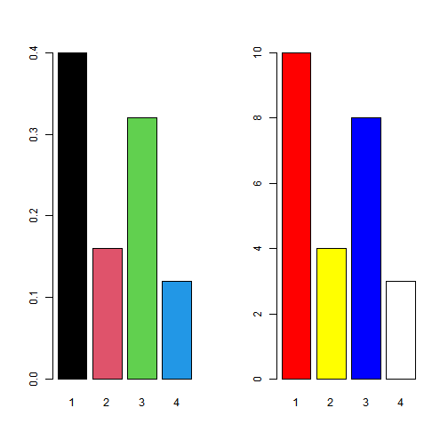
par(mfrow=c(1,1))
drink.count=table(drink)
par(mfrow=c(1,3))
pie(drink.count)
names(drink.count)=c("wine","wite","yellow","beer")
pie(drink.count)
pie(drink.count,col=c("purple","green","cyan","white"))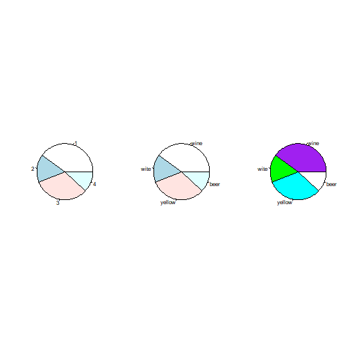
ex
par(mfrow=c(1,1))
salary=c(2000,2100,2200,2300,2350,2450,2500 ,2700,2900,2850,3500,3800,2600,
3000,3300,3200,4000,3100,4200)
mean(salary)
#> [1] 2897.368
median(salary)
#> [1] 2850
var(salary)
#> [1] 414853.8
sd(salary)
#> [1] 644.0915
fivenum(salary)
#> [1] 2000 2400 2850 3250 4200
summary(salary)
#> Min. 1st Qu. Median Mean 3rd Qu. Max.
#> 2000 2400 2850 2897 3250 4200add 150000
salarym=c(salary,150000)
mean(salarym)
#> [1] 10252.5
median(salarym)
#> [1] 2875
mean(salarym,trim=0.2)
#> [1] 2870.833
mean(salarym,trim=0.5)
#> [1] 2875
IQR(salarym)
#> [1] 925
mad(salarym)
#> [1] 704.235
stem(salary)
#>
#> The decimal point is 3 digit(s) to the right of the |
#>
#> 2 | 01234
#> 2 | 556799
#> 3 | 0123
#> 3 | 58
#> 4 | 02
stem(salarym)
#>
#> The decimal point is 5 digit(s) to the right of the |
#>
#> 0 | 0000000000000000000
#> 0 |
#> 1 |
#> 1 | 5
salaryg=cut(salary,breaks=c(2000,3000,4000,max(salary)))
table(salaryg)
#> salaryg
#> (2e+03,3e+03] (3e+03,4e+03] (4e+03,4.2e+03]
#> 11 6 1
par(mfrow=c(1,2))
hist(salary)
rug(salary)
hist(salary,prob=T)
rug(salary)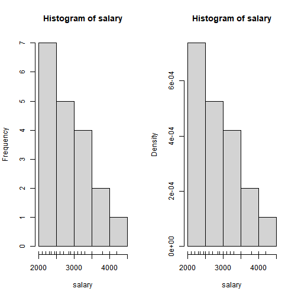
par(mfrow=c(1,2))
boxplot(salary)
boxplot(salary,horizontal=T)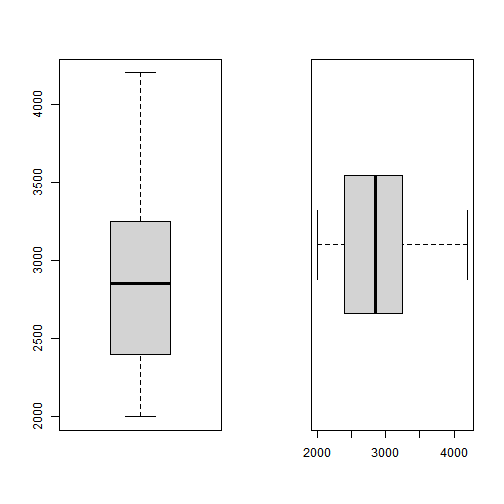
par(mfrow=c(1,1))
hist(faithful$eruptions,prob=T,breaks=25)
lines(density(faithful$eruptions),col='red')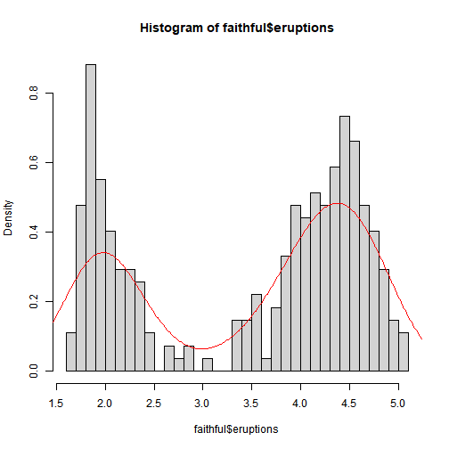
###outlier detection
boxplot(salarym)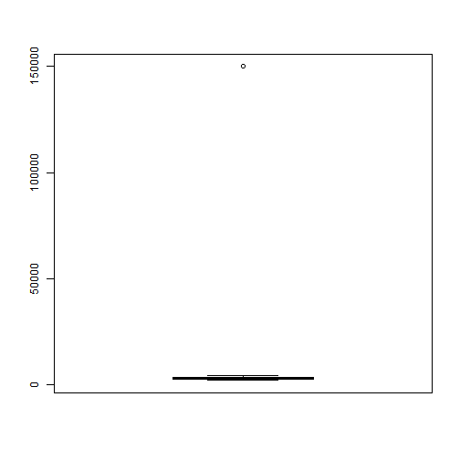
boxplot.stats(salarym)
#> $stats
#> [1] 2000 2400 2875 3400 4200
#>
#> $n
#> [1] 20
#>
#> $conf
#> [1] 2521.701 3228.299
#>
#> $out
#> [1] 150000##Grubb test
library(outliers)
set.seed(5)
x = rnorm(10)
x
grubbs.test(x)
grubbs.test(x,type=20)
grubbs.test(x,type=11)
######Dixon Q test
set.seed(8)
x=rnorm(10)
x
dixon.test(x)
dixon.test(x,opposite=TRUE)
dixon.test(x,type=10)
two variables
smoke=c("Y","N","N","Y","N","Y","Y","Y","N","Y")
study=c(1,2,2,3,3,1,2,1,3,2)
smoke=c("Y","N","N","Y","N","Y","Y","Y","N","Y")
study=c("<5h","5-10h","5-10h",">10h",">10h","<5h","5-10h","<5h",">10h","5-10h")
table(smoke,study)
#> study
#> smoke <5h >10h 5-10h
#> N 0 2 2
#> Y 3 1 2
tab=table(smoke,study)
prop.table(tab,1)
#> study
#> smoke <5h >10h 5-10h
#> N 0.0000000 0.5000000 0.5000000
#> Y 0.5000000 0.1666667 0.3333333
prop.table(tab,2)
#> study
#> smoke <5h >10h 5-10h
#> N 0.0000000 0.6666667 0.5000000
#> Y 1.0000000 0.3333333 0.5000000
prop.table(tab)
#> study
#> smoke <5h >10h 5-10h
#> N 0.0 0.2 0.2
#> Y 0.3 0.1 0.2
prop = function(x) x/sum(x)
apply(tab,2,prop)
#> study
#> smoke <5h >10h 5-10h
#> N 0 0.6666667 0.5
#> Y 1 0.3333333 0.5
t(apply(tab,1,prop))
#> study
#> smoke <5h >10h 5-10h
#> N 0.0 0.5000000 0.5000000
#> Y 0.5 0.1666667 0.3333333
par(mfrow=c(1,3))
barplot(table(smoke,study))
barplot(table(study,smoke))
barplot(table(study,smoke),beside=T,legend.text=c("<5h","5-10h",">10"))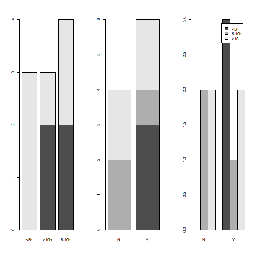
#legend()
#par(mfrow=c(1,1))ex
boxplot
x=c(5,5,13,7,11,11,9,8,9)
y=c(11,8,4,5,9,5,10,5,4,10)
boxplot(x,y)
boxplot
d=c(5,5,5,13,7,11,11,9,8,9,11,8,4,5,9,5,10,5,4,10)
g=c(1,1,1, 1,1, 1, 1,1,1,1, 2,2,2,2,2,2, 2,2,2, 2)
boxplot(d~g)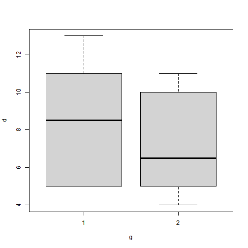
plot(d,g)
abline(lm(d~g)) 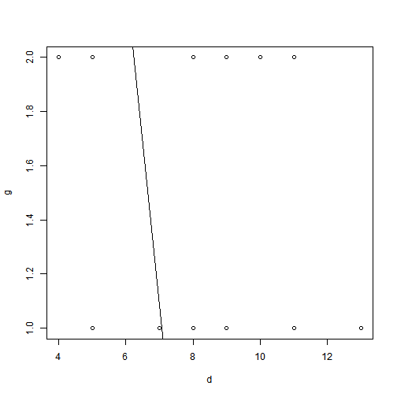
demo
不執行
yx=read.table("reg1.txt",header=T)
yx
attach(yx)
par(mfrow=c(1,2))
plot(x,y,pch=20)
plot(x,y);abline(lm(y~x))
abline(v=4500)
par(mfrow=c(1,2))
cor(x,y)
cor(y,x)
cor(rank(yx$x),rank(yx$y))
cor(x,y,method="spearman") #cor(yx$x,yx$y,method="spearman")
detach()
ex
data(PlantGrowth)
attach(PlantGrowth)
par(mfrow=c(1,2))
stripchart(weight~group,pc=1)
boxplot(weight~group, horizontal=T) 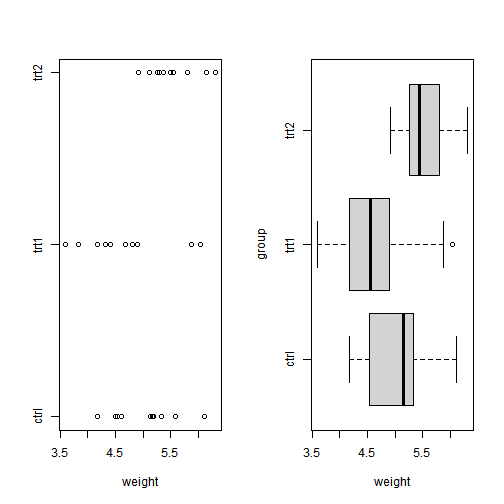
par(mfrow=c(1,1))
detach()
unPG=unstack(PlantGrowth)
sPG=stack(unPG)
sPG
#> values ind
#> 1 4.17 ctrl
#> 2 5.58 ctrl
#> 3 5.18 ctrl
#> 4 6.11 ctrl
#> 5 4.50 ctrl
#> 6 4.61 ctrl
#> 7 5.17 ctrl
#> 8 4.53 ctrl
#> 9 5.33 ctrl
#> 10 5.14 ctrl
#> 11 4.81 trt1
#> 12 4.17 trt1
#> 13 4.41 trt1
#> 14 3.59 trt1
#> 15 5.87 trt1
#> 16 3.83 trt1
#> 17 6.03 trt1
#> 18 4.89 trt1
#> 19 4.32 trt1
#> 20 4.69 trt1
#> 21 6.31 trt2
#> 22 5.12 trt2
#> 23 5.54 trt2
#> 24 5.50 trt2
#> 25 5.37 trt2
#> 26 5.29 trt2
#> 27 4.92 trt2
#> 28 6.15 trt2
#> 29 5.80 trt2
#> 30 5.26 trt2ex
將價格分3組,cheap,okay,expensive
library(MASS)
data(Cars93)
dim(Cars93)
#> [1] 93 27
attach(Cars93)
names(Cars93)
#> [1] "Manufacturer" "Model" "Type"
#> [4] "Min.Price" "Price" "Max.Price"
#> [7] "MPG.city" "MPG.highway" "AirBags"
#> [10] "DriveTrain" "Cylinders" "EngineSize"
#> [13] "Horsepower" "RPM" "Rev.per.mile"
#> [16] "Man.trans.avail" "Fuel.tank.capacity" "Passengers"
#> [19] "Length" "Wheelbase" "Width"
#> [22] "Turn.circle" "Rear.seat.room" "Luggage.room"
#> [25] "Weight" "Origin" "Make"
price=cut(Price,c(0,12,20,max(Price)))
table(price)
#> price
#> (0,12] (12,20] (20,61.9]
#> 22 40 31
levels(price)=c("cheap","okay","expensive")
table(price)
#> price
#> cheap okay expensive
#> 22 40 31
mpg=cut(MPG.highway,c(0,20,30,max(MPG.highway)))
table(mpg)
#> mpg
#> (0,20] (20,30] (30,50]
#> 2 62 29
levels(mpg)=c("gas guzzler","oky","miser")
table(mpg)
#> mpg
#> gas guzzler oky miser
#> 2 62 29
table(Type)
#> Type
#> Compact Large Midsize Small Sporty Van
#> 16 11 22 21 14 9
table(price,Type)
#> Type
#> price Compact Large Midsize Small Sporty Van
#> cheap 3 0 0 18 1 0
#> okay 9 3 8 3 9 8
#> expensive 4 8 14 0 4 1
table(price,mpg)
#> mpg
#> price gas guzzler oky miser
#> cheap 0 5 17
#> okay 2 26 12
#> expensive 0 31 0
table(price,Type,mpg)
#> , , mpg = gas guzzler
#>
#> Type
#> price Compact Large Midsize Small Sporty Van
#> cheap 0 0 0 0 0 0
#> okay 0 0 0 0 0 2
#> expensive 0 0 0 0 0 0
#>
#> , , mpg = oky
#>
#> Type
#> price Compact Large Midsize Small Sporty Van
#> cheap 1 0 0 4 0 0
#> okay 5 3 6 0 6 6
#> expensive 4 8 14 0 4 1
#>
#> , , mpg = miser
#>
#> Type
#> price Compact Large Midsize Small Sporty Van
#> cheap 2 0 0 14 1 0
#> okay 4 0 2 3 3 0
#> expensive 0 0 0 0 0 0
par(mfrow=c(1,2))
barplot(table(price,Type))
barplot(table(price,Type),beside=T)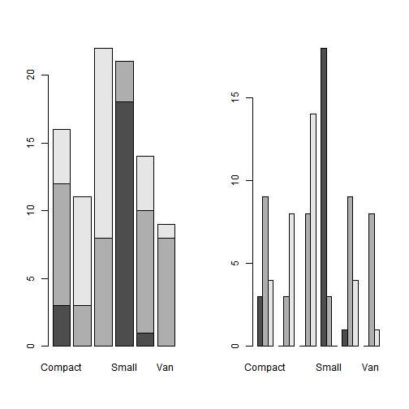
par(mfrow=c(1,1))
boxplot(Price~Type)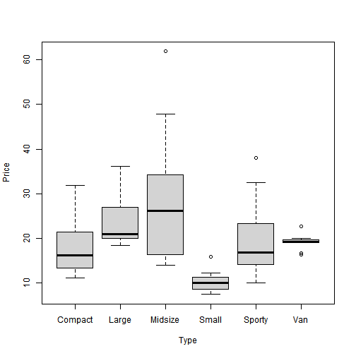
stripChart demo
r1=rnorm(1000)
f1=factor(rep(1:10,100))
par(mfrow=c(1,1))
boxplot(r1~f1)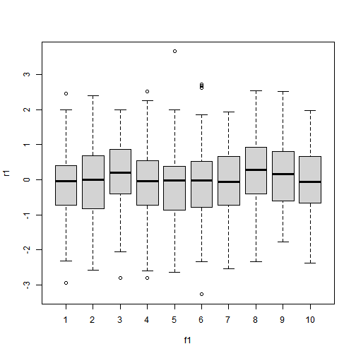
par(mfrow=c(1,1))
stripchart(r1~f1)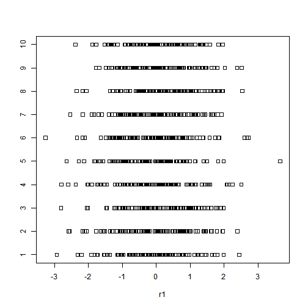
r2=rnorm(100)
f2=factor(rep(1:5,10))
par(mfrow=c(1,1))
stripChart(r2~f2)
#> Error in min(x, na.rm = na.rm): 'type' (list) 的引數無效
par(mfrow=c(1,1))
dotchart(PlantGrowth$weight,groups=PlantGrowth$group)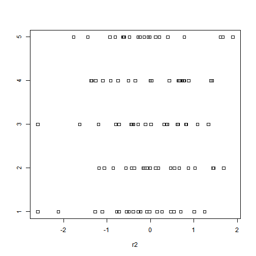
iris
#iris
head(iris)
#> Sepal.Length Sepal.Width Petal.Length Petal.Width Species
#> 1 5.1 3.5 1.4 0.2 setosa
#> 2 4.9 3.0 1.4 0.2 setosa
#> 3 4.7 3.2 1.3 0.2 setosa
#> 4 4.6 3.1 1.5 0.2 setosa
#> 5 5.0 3.6 1.4 0.2 setosa
#> 6 5.4 3.9 1.7 0.4 setosa
levels(iris$Species)
#> [1] "setosa" "versicolor" "virginica"
iris.lab = rep(c("1","2","3"),rep(50,3))
par(mfrow=c(1,2))
plot(iris[,1],iris[,3],type="n")
text(iris[,1],iris[,3],cex=0.6)
plot(iris[,1],iris[,3],type="n")
text(iris[,1],iris[,3],iris.lab,cex=0.7) 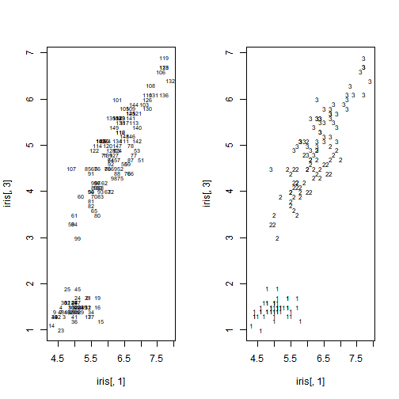
par(mfrow=c(1,1))
pairs(iris)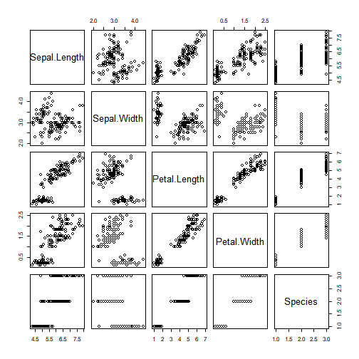
par(mfrow=c(1,1))
pairs(iris[,1:4])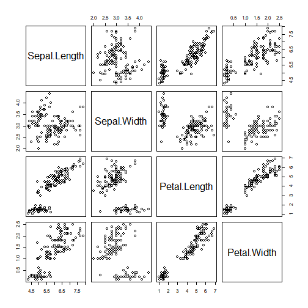
pairs(iris[1:4],pch=21,bg=iris.lab)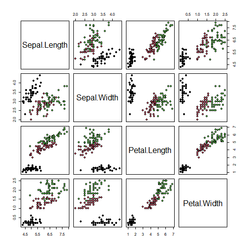
pairs(iris[1:4],pch=21, bg=c("red", "green3", "blue")[unclass(iris$Species)])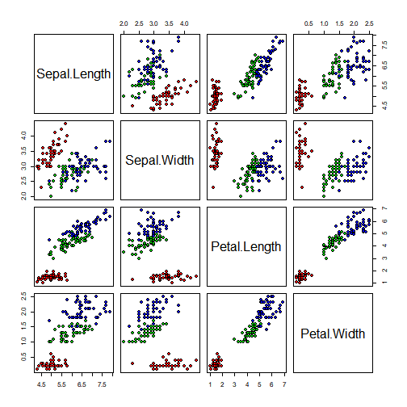